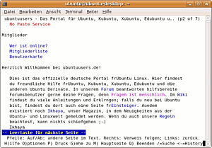

Lynx
Dieser Artikel wurde für die folgenden Ubuntu-Versionen getestet:
Ubuntu 14.04 Trusty Tahr
Zum Verständnis dieses Artikels sind folgende Seiten hilfreich:
 Lynx
Lynx  ist ein Webbrowser für die Kommandozeile. Das ist auch der Vorteil gegenüber anderen (grafischen) Webbrowsern: wenn nichts mehr funktioniert - Lynx funktioniert immer noch, da er im reinen Textmodus läuft.
ist ein Webbrowser für die Kommandozeile. Das ist auch der Vorteil gegenüber anderen (grafischen) Webbrowsern: wenn nichts mehr funktioniert - Lynx funktioniert immer noch, da er im reinen Textmodus läuft.
Das heißt, wenn KDE, GNOME oder eine andere grafische Benutzeroberfläche nicht mehr startet, kann man mit Lynx immer noch im Internet surfen, um zum Beispiel eine Lösung für ein bestimmtes Problem zu suchen. Lynx ist außerdem sehr genügsam, was die Systemressourcen angeht.

Diese Vorteile betrachten viele Anwender allerdings als Nachteil, weil aus diesem Grund viele Merkmale des Internets natürlich wegfallen: Textattribute, Bilder sowie Animationen werden in diesem Browser schlicht weg nicht dargestellt.
Eine Alternative zu Lynx sind die Programme w3m und links2.
Installation¶
Lynx ist in den Paketquellen enthalten und kann über die Paketverwaltung installiert werden [1]:
lynx-cur
 mit apturl
mit apturl
Paketliste zum Kopieren:
sudo apt-get install lynx-cur
sudo aptitude install lynx-cur
Bedienung¶
Die Bedienung des Browsers ist sehr einfach, denn man startet ihn einfach im Terminal [2]. Optional kann man auch gleich eine URL übergeben, die Webseite wird dann sofort aufgerufen. Beispiele:
lynx # Allgemein lynx http://www.ubuntuusers.de # Mit URL
Tastenkürzel¶
Lynx kann mit den folgenden Tastenkürzeln bedient werden:
| Lynx | |
| Taste(n) | Funktion |
| ⌫ | Liste der bisher angezeigten Seiten |
| Bild ↑ / Bild ↓ | Cursor eine Seite auf/ ab |
| ↑ / ↓ | Cursor zum vorigen/ nächsten Link |
| ⏎ od. → | Einem Link folgen |
| ← | Zurück zum letzten Dokument |
| A | Verweis auf das Dokument in die Bookmark-Liste einfügen (wird in der Datei ~/lynx_bookmarks.html gespeichert) |
| D | Dokument auf den Rechner übertragen |
| E | Editor starten |
| G | Internetadresse (URL) per Tastatur eingeben |
| K | Alle verfügbaren Tastenkürzel anzeigen |
| O | Einstellung von Optionen |
| V | Bookmark-Liste anzeigen |
| Q | Beendet das Programm. |
Funktionen¶
Lynx kann durch Angabe eines Verzeichnisses gestartet werden: Das Programm zeigt eine Liste von Verzeichnissen und Unterverzeichnissen und aller enthaltenen Dateien an, die wie Links ausgewählt werden können. Textdateien im ASCII-Format können direkt in Lynx angezeigt werden.
Das Programm kann außerdem als Konverter von HTML in das ASCII Format verwendet werden und so HTML-Dokumente in lesbare Textdateien umwandeln [2]:
lynx -dump quelle.html > ziel.txt
 Übersichtsseite
Übersichtsseite- Erstellt mit Inyoka
-
 2004 – 2017 ubuntuusers.de • Einige Rechte vorbehalten
2004 – 2017 ubuntuusers.de • Einige Rechte vorbehalten
Lizenz • Kontakt • Datenschutz • Impressum • Serverstatus -
Serverhousing gespendet von